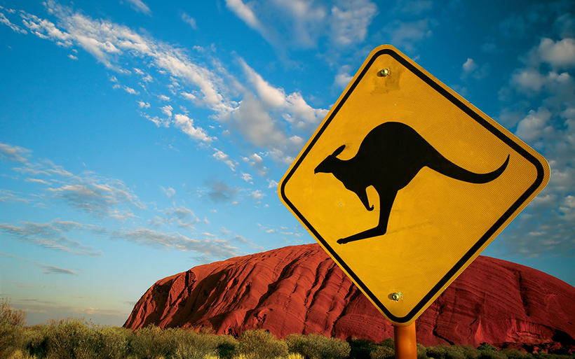
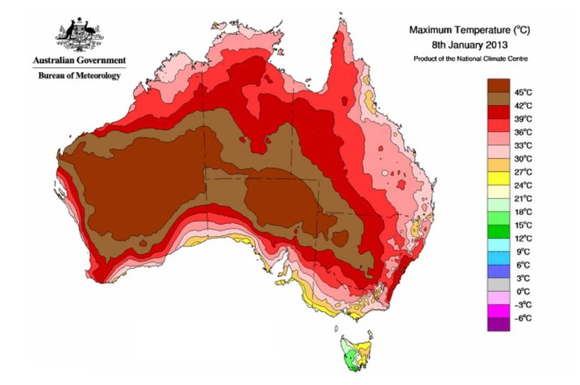
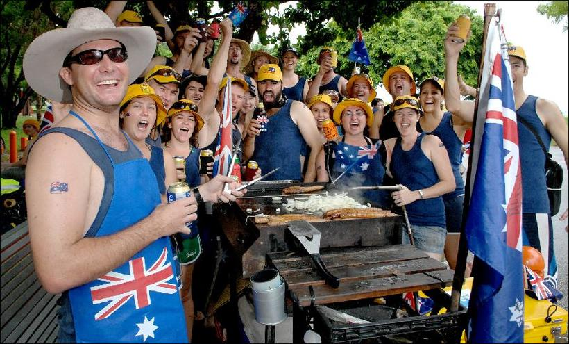
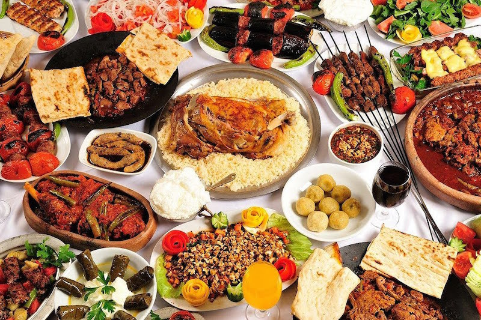

Австралія
Країна блакитних берегів, піщаних пляжів і галасливих мегаполісів. Таємничий материк з унікальною дикою природою, дивовижною культурою і захоплюючими пам'ятками. Подорож до Австралії задовольнить смак будь-якого туриста, адже тут є все: від пустелі до гірськолижних курортів, від колоритних районів з хостелами до готелів класу люкс з високим рівнем сервісу. Австралію можна назвати самою дивною і відокремленої країною, яка знаходиться практично на самому краю земної кулі. Ця країна не має близьких сусідів, і її з усіх боків омивають води океану. Саме тут живуть найрідкісніші та отруйні тварини в світі. Напевно, кожен чув про кенгуру, які живуть тільки в Австралії. Це високорозвинена країна, яка дбає про своїх жителів і гостинно запрошує кожного туриста. Тут можна знайти відпочинок на будь-який смак.
Погода
Австралія простягається в чотирьох кліматичних поясах, тому погода різниться від штату до штату. Північна територія - це субекваторіальна зона, а значить дощовий, жаркий і вологий Квінсленд, де влітку (грудень-лютий) температура повітря тримається на позначці близько 25 градусів і випадає значна кількість опадів. Щорічні новини про повені в далекій Австралії прилітають саме звідси.
Континентальний тропічний і тропічний вологий клімат властивий тропічному поясу, який покриває всю центральну зону материка. Тут річна температура піднімається до 30 градусів, а взимку опускається до 15.
Південна частина материка лежить в субтропічному поясі і характеризується жарким літом (близько 40 градусів) і дуже холодної (ви навіть не уявляєте!) Взимку, коли повітря прогрівається до 10, а то і 6 градусів.
Практично весь острів Тасманія розташований у володіннях помірного кліматичного поясу, і тут дуже чітко видно кордон сезонів: від сніжної зими до спекотного літа.
Особливості менталітету
Австралійці справжні душки! Це привабливі і дотепні люди, яких я тільки зустрічала у своєму житті. Вони ростуть в атмосфері повної свободи, тому мають самоповагу, якій можна позаздрити, а сім'я грає дуже важливу роль в їхньому житті. Однак, незважаючи на доброзичливий характер, до них ніколи не слід лізти в кишеню за словом.
Вам будуть посміхатися всюди: на касі в супермаркеті, в аеропорту і на заправці. Вони не ідіоти, їм просто все в кайф! Поки немає реальних причин для смутку, австралієць буде задоволений як слон. Тому російська недружелюбність сприймається ними з жартами-примовками, вони просто не розуміють, як можна не радіти життю.
Австралійці цінують компанію і обожнюють своїх друзів і країну, тому у вихідні на пляжах можна спостерігати групу парасольок і кілька переносних холодильників з напоями та їжею. До речі, п'ють австралійці так, що російським навіть не снилося. Те, що в Росії означає "накваситься", в Австралії - всього лише ланч з бабусею.
Їжа та напої
Культура їжі - це 80% всієї культури Австралії. Оззі обожнюють смачно поїсти з красивим видом і в хорошій компанії. Оскільки країна мультикультурна, завжди можна знайти кухню на свій смак: європейську, тайську, китайську, російську, італійську та інші. Серед населення Австралії багато прихильників вегетаріанства і захисту навколишнього середовища, тому в великих містах варто хоч раз відвідати веганські ресторан. Багато разів я приводила скептично налаштованих друзів в такі заклади - смаком страв переймаються навіть переконані м'ясоїди!
